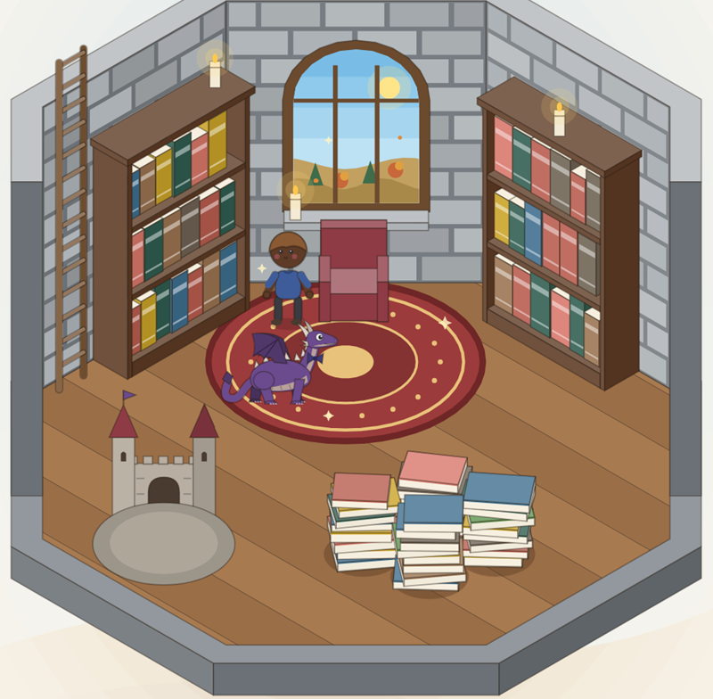

Deine Bibliothek
Bücher per ISBN-Scan oder Suche hinzufügen, Lesefortschritt festhalten, bewerten, Notizen schreiben und verliehene Bücher im Blick behalten.
Bookspire ist eine App für Bücherwürmer. Behalte den Überblick über gelesene Bücher und deine Leseliste und richte dir in einem magischen Turm dein eigenes Lesezimmer ein.
Jedes gelesene Buch steht dort im Regal, ungelesene liegen auf einem Stapel. Mit jedem Buch, das du beendest, schaltest du etwas frei. Sind alle Regale voll, wächst der Turm um ein Stockwerk – und im Erdgeschoss wartet ein geheimnisvolles Ei darauf, dass du liest.
Bald für iPhone und Android

Bücher per ISBN-Scan oder Suche hinzufügen, Lesefortschritt festhalten, bewerten, Notizen schreiben und verliehene Bücher im Blick behalten.
Ein Turmzimmer, das mit deinen Büchern wächst. Richte es ein, schalte Möbel, Teppiche und Kaminfeuer frei – der Blick aus dem Fenster folgt Tages- und Jahreszeit.
Aus dem Ei schlüpft ein kleiner Drache, der mit jeder gelesenen Seite wächst und irgendwann ein eigenes Schloss bewohnt.
Mit einem Konto bleiben Bibliothek und Turm auf allen Geräten gleich. Finde Freunde, empfiehl ihnen Bücher und besuche ihre Türme.